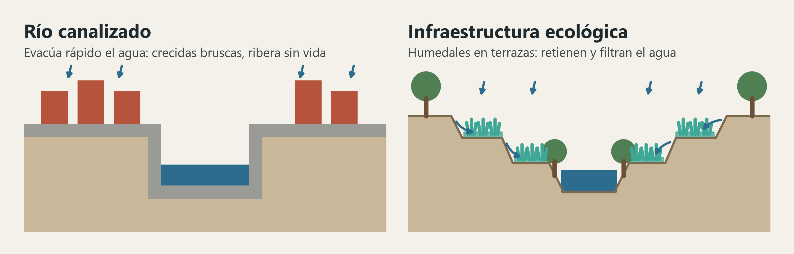
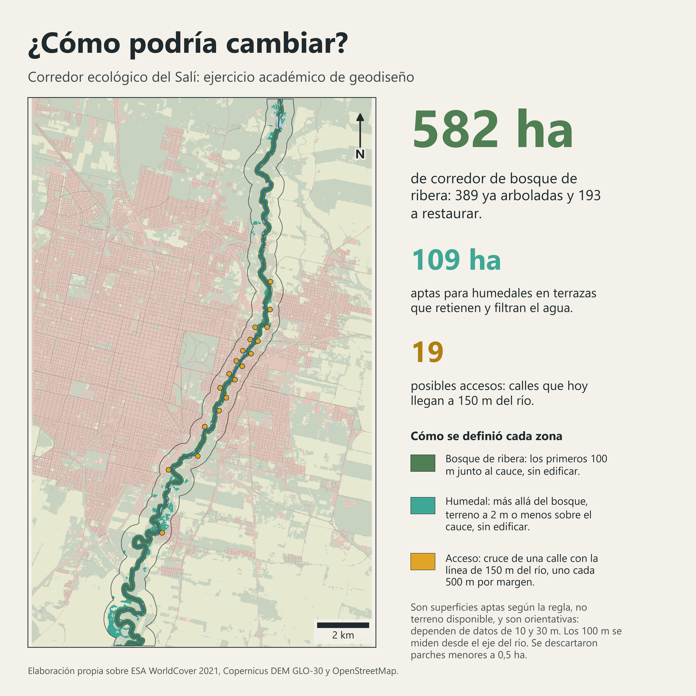
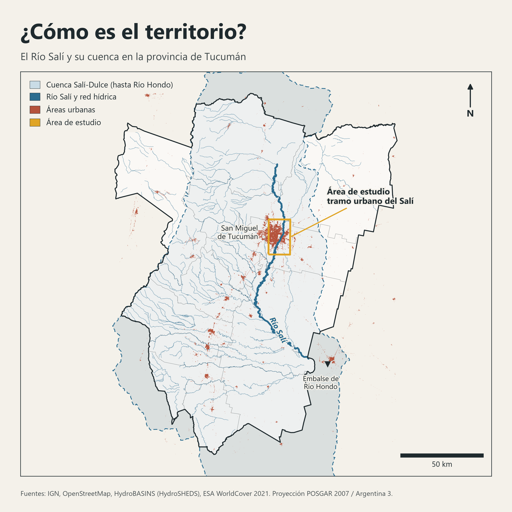
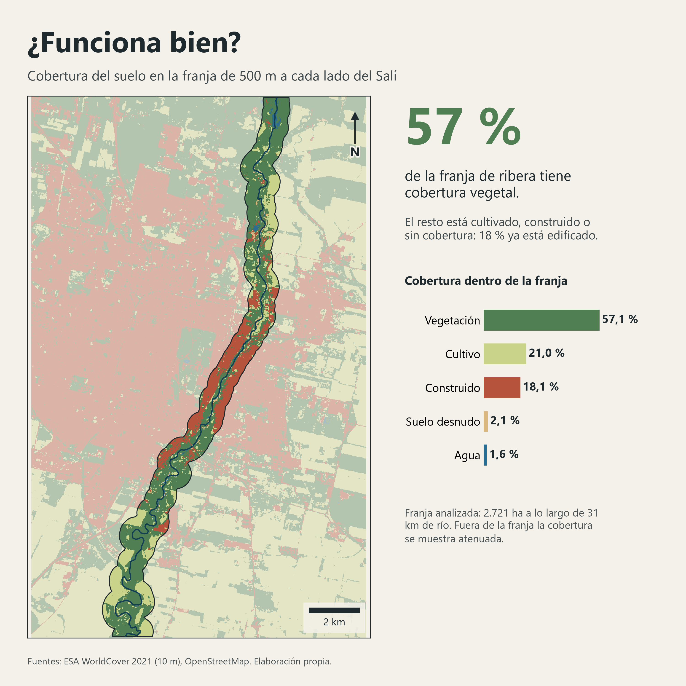
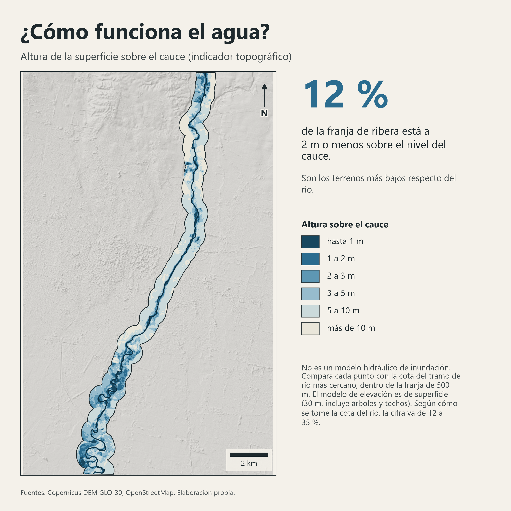

{{titulo}}
{{subtitulo}}
«{{cita_traduccion}}»
“{{cita_texto}}”
{{cita_autor}}
La idea del ensayo
{{ideas_html}}
Del hormigón a la infraestructura ecológica

El caso del ensayo. {{shuicheng_html}}

El caso local
{{titulo_caso}}
{{datos_html}}| Río Shuicheng | Río Salí |
|---|
Qué aporta el GIS al diseño
- {{aporte_html}}

1. Entender el territorio. El Salí recorre la provincia de norte a sur y atraviesa su mayor área urbana.

2. Evaluar cómo funciona. En {{ribera_largo}} km de río, el {{ribera_construido}} % de la franja de ribera ya está edificado.

3. Leer el relieve. El {{altura_pct}} % de la franja está a {{umbral}} m o menos sobre el cauce: ahí se ubican los humedales.